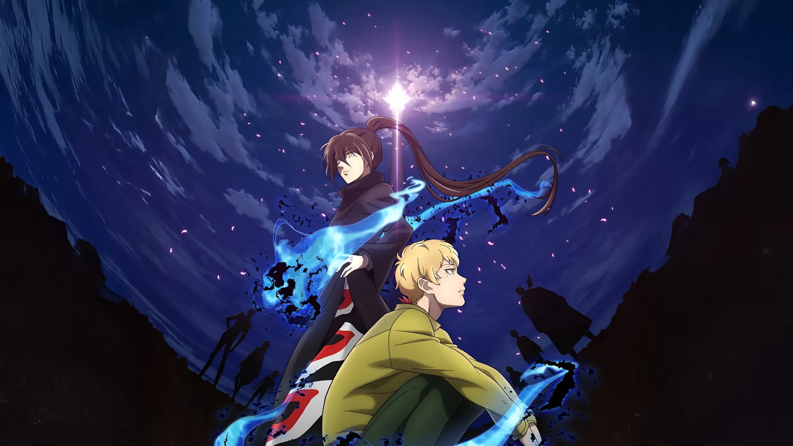
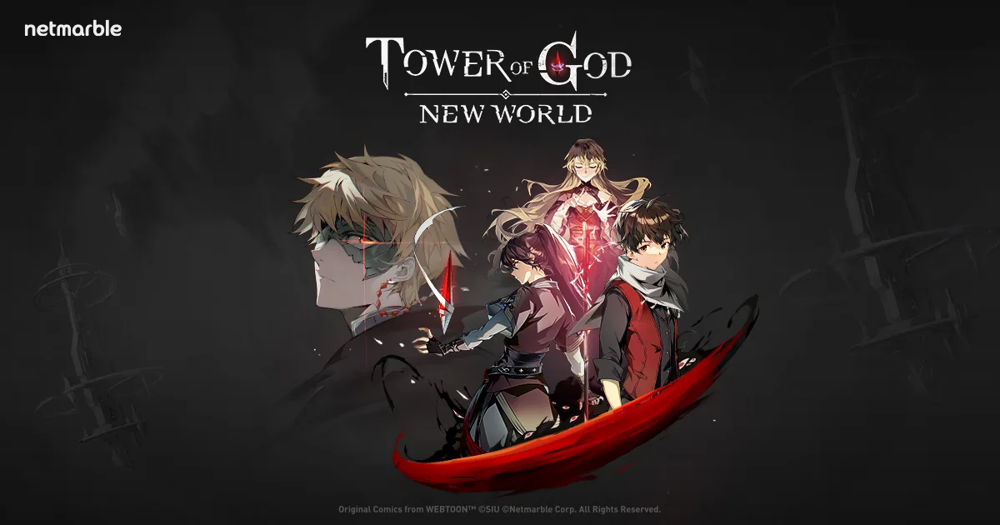
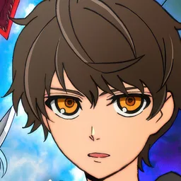
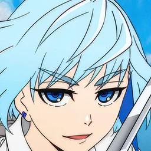
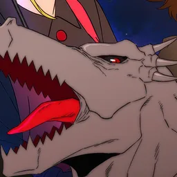
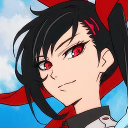
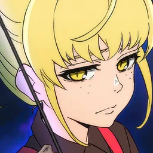

5 éléments
RougebatVertbatBleubatRouge
Jaune⇄Violet
Jaune et Violet sont forts l'un contre l'autre. Un avantage d'élément donne environ +50 % de dégâts infligés et 50 % de dégâts subis en moins.

L'idle RPG de Netmarble tiré du webtoon de SIU. Monte la Tour avec Bam, Khun, Rak et plus de 60 personnages.
Tower of God : New World est un RPG « idle » (ton équipe continue de récolter du butin quand tu n'es pas connecté) adapté du webtoon Tower of God de SIU, publié sur WEBTOON.
On suit l'ascension de Vingt-Cinquième Bam dans la Tour en mode Histoire, et on monte ses propres équipes en mode Aventure. Les combats sont en auto, avec vitesse x2 et « résolution rapide ».






Ce qu'il faut savoir avant de monter ses équipes.
Jaune et Violet sont forts l'un contre l'autre. Un avantage d'élément donne environ +50 % de dégâts infligés et 50 % de dégâts subis en moins.
5 persos : 3 devant, 2 derrière. Guerriers et tanks devant ; distance, mages et supports derrière.
Les SSR+ sont les plus fortes. Les niveaux se partagent via le Shinsu Link : on monte des emplacements, pas chaque perso un par un.
Chaque palier donne des stats et monte les compétences (jusqu'à Rouge 3).
D'après le guide débutant de Conowen.
Monter un carry
Débloque l'équipement exclusif (EE).
Nécessaire pour porter une arme d'ignition.
100 ACC, 100 EVA et 25 Swiftness.
Déblocages à viser
Épreuve du Chaos et Épreuves d'Origine : Suspendium, tickets, matériaux.
Renforce les unités au-delà des limit breaks.
Armes d'ignition pour des effets en plus.
La progression avancée.
Classement Pocket Gamer du 17 septembre 2026 (version 4.02.00). La méta bouge vite : vérifie avant d'investir.
Les plus puissants du jeu.
Très bons, peuvent monter en S avec quelques ajustements.
Utiles mais plus spécialisés.
Plusieurs persos existent en plusieurs versions (titres entre crochets) : le détail par version est dans les tier lists de Conowen.
Compose tes teams en 3-2 : 3 devant, 2 derrière. La page vérifie le placement et les éléments.
Clique sur un perso pour l'ajouter (il se place devant ou derrière selon son rôle), reclique pour le retirer. Tes 3 teams et ta liste « Mes persos » restent enregistrées sur ton appareil. Persos et valeurs : Conowen.
Clique pour agrandir.
Les codes cadeaux, puis les sites de référence (Conowen en tête).